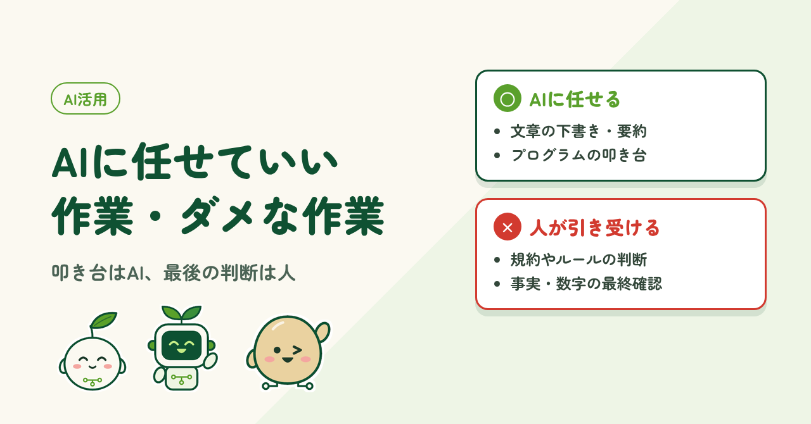
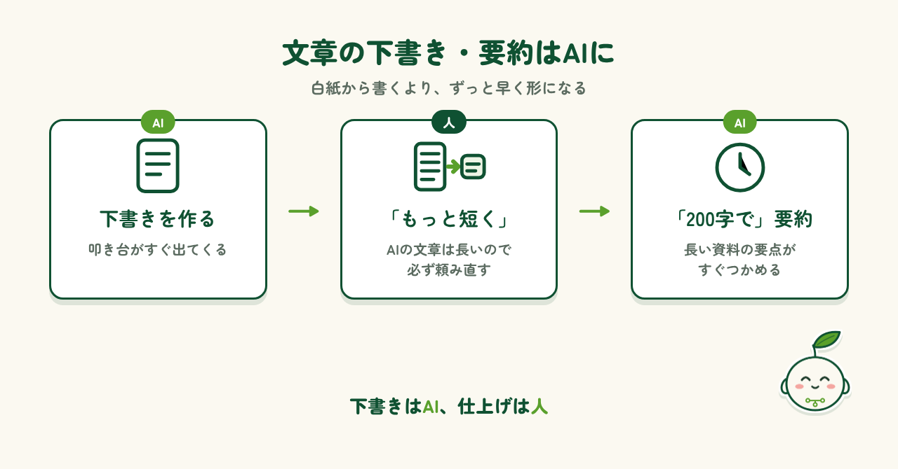
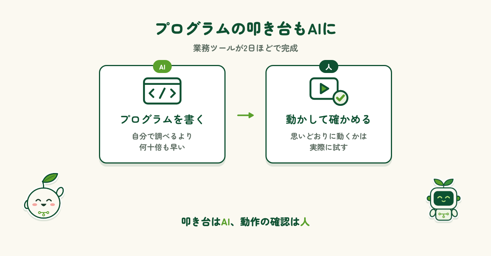
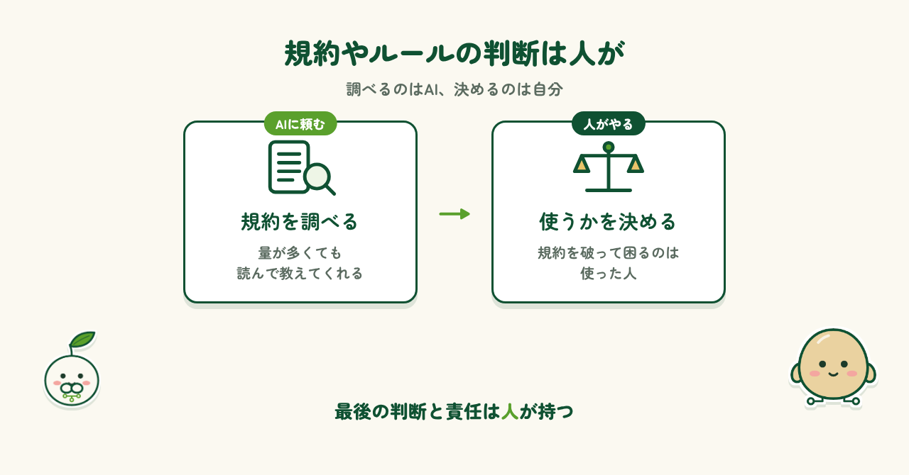
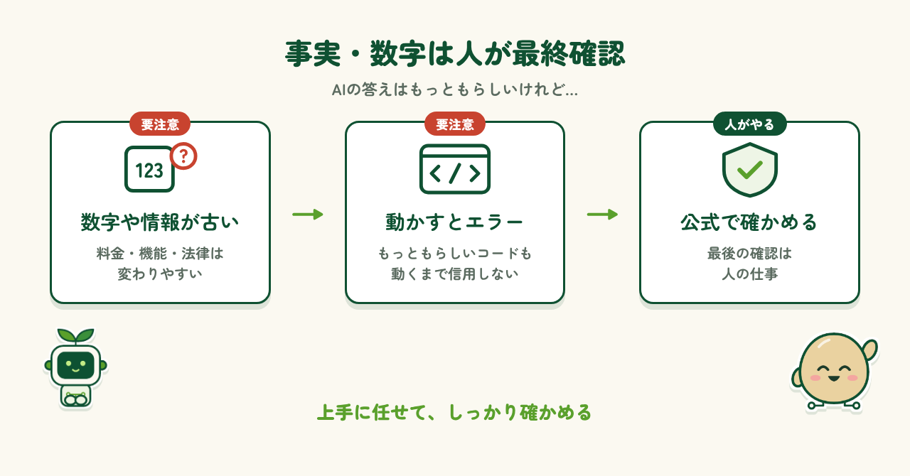

2026.10.18 公開
AIに任せていい作業・ダメな作業
AIは何でも正しく答えてくれる存在ではなく、優秀なアシスタント。実際に使ってきた経験から、任せていい作業と任せてはいけない作業を紹介します。

はじめに
AIを使っていて便利だと感じるのは、アイデア出しや壁打ちの相手になってくれることです。思いついたことを話すと、すぐに案を返してくれるので、考えが整理されていきます。一方で、AIはもっともらしい説明をしてきます。間違っていても自信たっぷりに答えるので、重要な決断まで任せることはできません。この記事では、実際にAIを使ってきた経験から、任せていい作業と任せてはいけない作業を紹介します。
任せていい作業
まずは、AIに任せると助かる作業です。どちらも「あとで人が手を入れる」前提のものです。
文章の下書き・要約
文章の叩き台を作ってもらえるのは、とても助かります。白紙から書き始めるより、ずっと早く形になります。ただ、AIの文章は長い（笑）。そのため、「もっと短くして」と必ず頼むことになります。要約も、「200字で」と文字数を指定すれば、その長さに収めてくれます。長い資料を読む前に要点をつかむのにも便利です。

プログラムの叩き台
プログラムの叩き台を作ってもらえるのも、本当に助かります。以前、ちょっとした業務ツールを作ったときも、AIにプログラムを書いてもらい、2日ほどで完成しました。自分で調べて自分で作っていたら、10〜100倍、いや体感では1000倍は時間がかかっていたと思います。ただし、できたプログラムが思いどおりに動くかは、実際に動かして確かめました。叩き台はAI、動作の確認は人。この分担が大切です。

任せてはいけない作業
次は、AIに任せてはいけない作業です。どちらも、間違えたときに困るのは人の側です。
規約やルールの判断
正直に言うと、ルールや規約は量が多く、自分だけでは調べきれません。地図データを集めるツールを作ったときも、有名な地図サービスは規約で自動取得が禁止されていること、別の無料の地図データなら認められていることを、AIに調べてもらいました。とても助かりましたが、AIは責任を負えません。規約を破って困るのは、使った人です。だからこそ、AIに調べてもらった上で、どのデータを使うかは自分で決めました。最後の判断と責任は、人が持つべきだと思います。

事実・数字の最終確認
AIの答えは、事実や数字ほど注意が必要です。私はプログラムについては、実際に動くまで信用していません。もっともらしいコードでも、動かすとエラーが出ることがあるからです。また、AIの情報は古いことも多くあります。なお最近のAIは保険をかけて、「最新の情報はご自身で確認してください」と言ってくることが多い気がします。料金や機能、法律などは変わりやすいので、公式の情報で確かめる。ここは人の仕事です。

まとめ
AIは「何でも正しく答えてくれる存在」というより、自分の能力や作業効率を高めてくれる優秀なアシスタントだと思います。下書きや要約、プログラムの叩き台はどんどんAIに任せてよいと思います。一方で、規約の判断や事実の確認、最後の決断は人が行うべきです。この分担ができれば、AIはとても頼もしい存在になります。上手に任せて、しっかり確かめる。これからもそんな付き合い方を続けていきたいと思います。
制作メモ
段落の構成と文章の下書きはAI（Claude）と作り、各段落に自分の感想を入れて、1段落ずつ確認・修正しました。